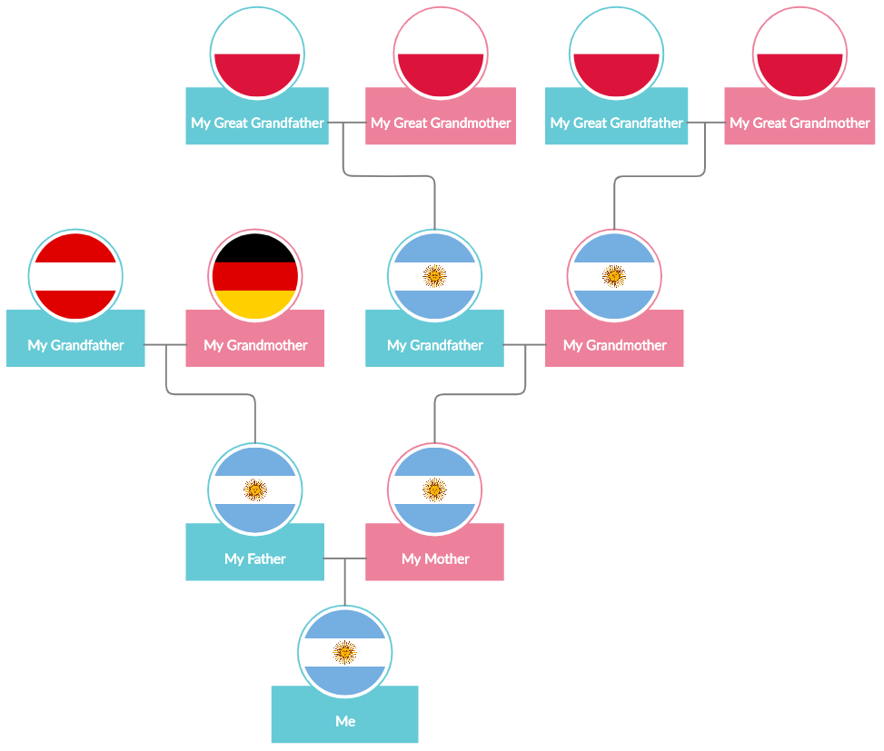

As I explained in my FAQs page:
I’m a -year-old Argentinian-born, Austro-German of Ashkenazi Jewish descent living in Ireland.
Yeah… even I find it confusing sometimes. And that description isn’t even that accurate. Below you’ll find a very simplified family tree showing the birthplace of my parents, my grandparents and (some of) my great grandparents. The history of my family is an extremely interesting and complex one. The chart below is just the tip of the iceberg.
If you’re my relative (such as my sister who's very talented but annoying) and you can’t find yourself in it, don’t be offended, I just left you out for clarity. Love you xx